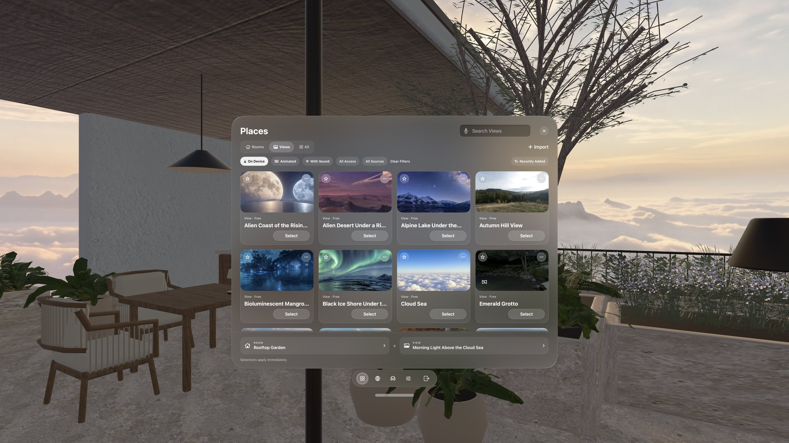

Locus 1.2
One place to choose, and a seat that’s yours.
Rooms, Views, and everything you can download now live together in Places. Seats stay visible in the Room, you can add seats of your own, and a simpler bar keeps the controls for your current Place one tap away.

Everything in Places.
Places now holds the Rooms and Views on your device and the ones you can download, so there is no separate Library page. Switch between Rooms, Views, and All, and use each card's own button: Select, Download, Update, or Unlock. Choose the card itself to read about it.
A single row of filters sits under the tabs—On Device, Animated, With Sound, access, and source—and the sort menu keeps Favorites First alongside Title and Recently Added. When updates are waiting, Update All installs them one after another. Your tab, search, filters, and sort are remembered. To bring in your own panorama or Room, choose Import at the top of Places.
Seats you can see.
Seat markers now stay in the Room at each seat's eye height, so you can look at one and tap it to sit there. Seats that share a sofa, table, or bar appear as one marker; tap it and pick the exact seat in the Seats panel. The Seats button in the bar lists the same groups, with a desk icon for desk seats and a chair for lounge seats.

Seats of your own.
Choose Add Seat to put a seat anywhere in the Room. Name it, place it with Move & turn, and save it; each Room keeps up to 20 of your own seats, and they come back the next time you visit. Your own seats have no desk, so they are made for reading, watching, and looking around.
Move Seat adjusts the seat you are in, in steps of 1 cm · 1°, 5 cm · 15°, or 25 cm · 45°. Save the new position for that seat, or choose Save as a New Seat to keep the original too. If a Room update changes its shape, Locus asks you to reposition affected seats instead of deleting them.
A simpler bar, and Settings for this Place.
The bar now holds Places, Open Browser, Seats, Settings, and Leave. Settings opens Current Place: your immersion choice—Desk & Surroundings or Windows & Crown—then Quick Controls, and pages for Light & Picture, Sound, Motion, and Recline. Want a control on the bar itself? Customize Bar pins any Quick Control and lets you reorder the buttons.

All Settings opens the full Settings window with six sections: Current Place, Workspace, Browser Settings, Setup & Permissions, Plans & Purchases, and Help & About.
A guided tour.
A short tour now opens the real Places, Seats, and Settings pages one at a time: choose a Place, choose a seat, choose your immersion, make it yours, and learn your controls. If you finished the earlier tour, you see only the two new pages. Replay it any time from Settings → Setup & Permissions → Take the Guided Tour.
Smaller things.
- Open Browser adds a new tab to the Browser you already have open instead of opening another window.
- Play Video in Motion can be saved per View, so an Animated View you would rather keep still stays that way.
- When a Room has its own background sound, a View's ambience starts at 25% so the two mix; adjust it in Sound.
- The Room motion tile turns all of a Room's ambient animations on or off at once.
- If your Supporter access has lapsed, Update on a Supporter item shows View Plans right away, and Update All skips those items.
For authors: seat groups.
A Room can now group seats that share a table, sofa, or bar, so Locus shows one marker and one entry for them. Seat groups use Room format 6 and require Locus 1.2. Existing Rooms keep working unchanged. See the Room and View ZIP reference for the fields and validation rules.